📖 设定集 · F2设定集
The Art of Frozen II
F2官方艺术设定集
5
本卷页数
🎨
设定集
中/英
双语
序言里最有分量的发现：团队意识到「神话讲的是平凡世界里承担世界之重的魔法存在，多是悲剧；童话讲的是魔法世界里历经磨难终获胜利的平凡人」。由此他们看清了F1的结构——艾莎是经典的神话角色，安娜是经典的童话角色，一部电影里两…
📘 官方设定集
The Art of Frozen II
《冰雪奇缘2》(2019)官方艺术设定集：阿伦黛尔、风、地、火、水四大精灵章节，与「神话+童话」的创作方法论。
164
页数
12+
精选图版
2019
出版年
F2
对应电影
📗 《The Art of Frozen II》由迪士尼动画内部作者 Jessica Julius 撰写、Chronicle Books 于2019年出版——三位主创 Chris Buck、Jennifer Lee 与 Peter Del Vecho 联名作序。如果说F1设定集讲的是「从无到有」，F2设定集讲的就是「往深处去」：为什么艾莎有魔法？神话与童话如何并行？四大精灵的符号体系如何建立？
📋 基本信息
书名The Art of Frozen II
作者Jessica Julius
前言Chris Buck · Jennifer Lee · Peter Del Vecho
出版2019 · Chronicle Books
章节Arendelle / Air / Earth / Fire / Water / Color Script
设计Toby Yee；封面 Brittney Lee & Justin Cram
🎭 创作方法论：神话与童话并行
序言里最有分量的发现：团队意识到「神话讲的是平凡世界里承担世界之重的魔法存在，多是悲剧；童话讲的是魔法世界里历经磨难终获胜利的平凡人」。由此他们看清了F1的结构——艾莎是经典的神话角色，安娜是经典的童话角色，一部电影里两条线并行，安娜的童话拯救了艾莎的神话。F2必须延续这个结构。
同样是序言定调的人物内核：通过心理学与创伤专家的研究，团队确认艾莎具备「守护者（protector）」的特质，安娜则是「领导者（leader）」——第二部的旅程就是让两人各自走向这个身份。季节也换了：秋天，「一年的成熟期」，对应角色的成熟。
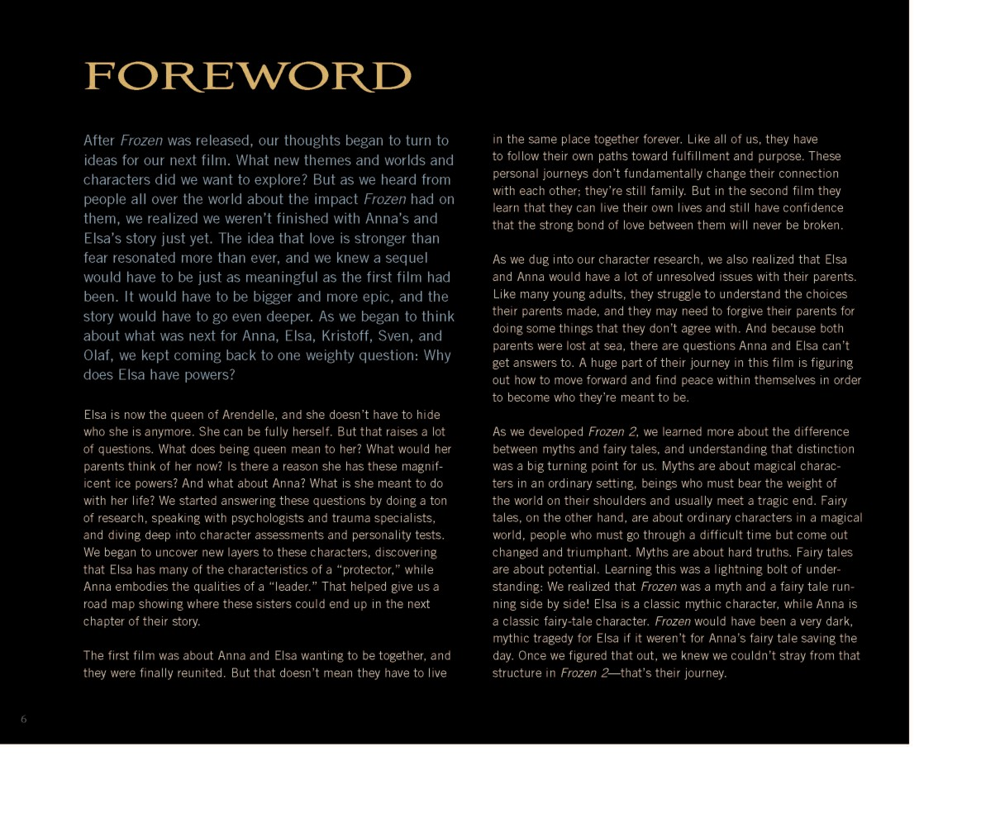
F2序言页（Foreword）
导演 Chris Buck、Jennifer Lee 与制片人 Peter Del Vecho 的序言：官方定调「安娜是 leader、艾莎是 protector」「F1是神话与童话并行」——F2人物考据最权威的一页。
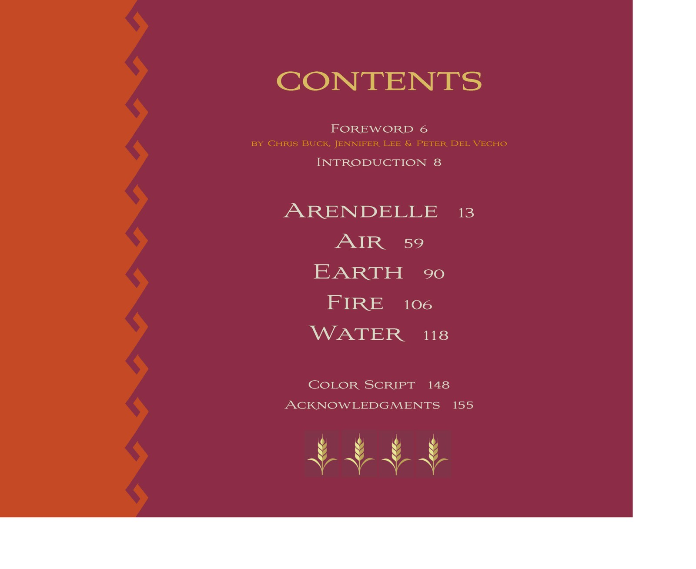
F2目录页
全书结构：Foreword / Introduction / Arendelle（13页起）/ Air（59）/ Earth（90）/ Fire（106）/ Water（118）/ Color Script（148）——四大精灵各占独立章节。

F2雪花标志页
黑底上F2的官方雪花 emblem：四枚菱形冰晶分踞四方、各含一个元素符号——整部续作的视觉「印章」。
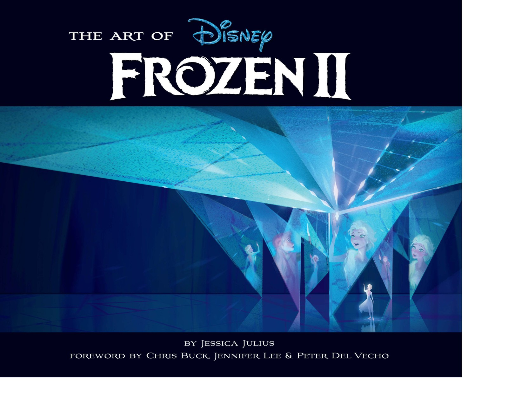
《The Art of Frozen II》封面
F2官方设定集封面（Justin Cram / Brittney Lee）：冰晶棱镜中的多重艾莎倒影——「水晶宫折射」正是F2艾莎魔法与自我认知的核心意象。
🧭 新世界的视觉构建
设计团队以挪威、芬兰、冰岛三地采风为基底定下分工：挪威与芬兰的森林「像童话，是安娜的世界」；冰岛的史诗地貌「是自然掌权之地，是艾莎的神话场域」。色彩上用暖橙与紫红的秋叶对抗冷调的天空与远景；所有角色模型因技术升级而彻底重建，但延续了F1「垂直拉长、拒绝歪斜」的美学。
四大元素之灵的民俗来源各有所本：水灵出自古诺尔斯神话，风灵出自斯堪的纳维亚民间故事，地巨人对应「山怪投掷的冰河巨石」，火蝾螈则来自「燃烧的木堆里跑出蜥蜴」的传说。Brittney Lee 为它们设计了统一的菱形徽章体系——这也是全书视觉系统的「总纲」。
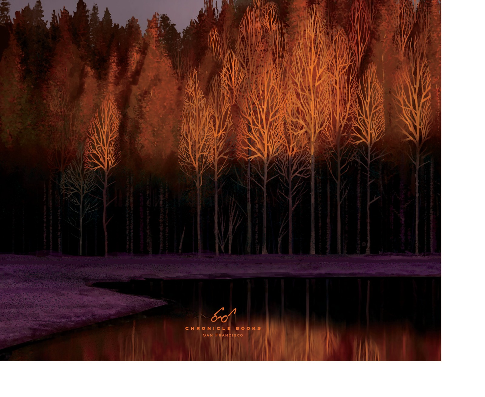
F2扉页概念画
书名页背景：秋日魔法森林的紫色倒影与 Chronicle Books 标志——故事从森林深处开始。

阿伦黛尔秋季全景
David Womersley 绘制的官方全景：城堡坐落于海湾小岛、桥梁连接两岸，秋日彩林与雪山环绕——这是F2中阿伦黛尔的「定妆照」。

四大元素徽章 · The Elements
Brittney Lee 绘制的四元素官方符号：水（波浪）、风（风线）、地（地平线）、火（火苗）——菱形冰晶加底部符号的体系是F2视觉设计的总纲。
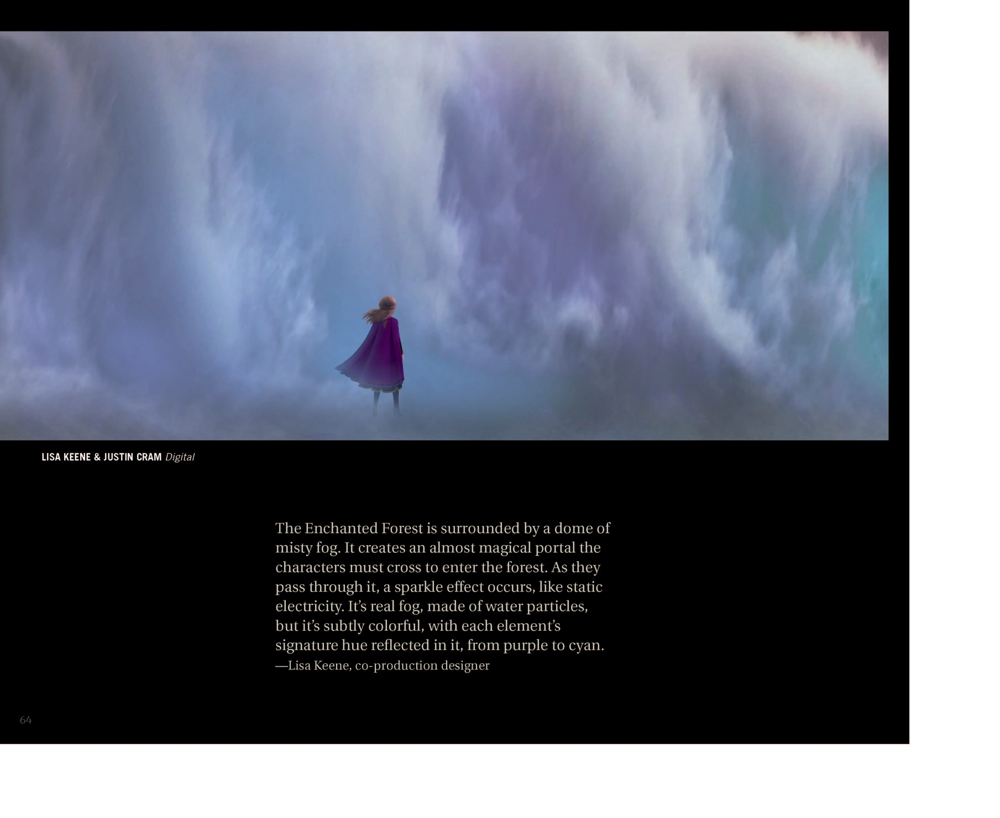
魔法森林 · 雾之穹顶
Lisa Keene 笔下安娜面对翻涌如「水墙」的迷雾：雾是真水粒子，却带着从紫到青的微妙彩色——每个元素的代表色都映在其中。
🖼️ F2设定集精选图版
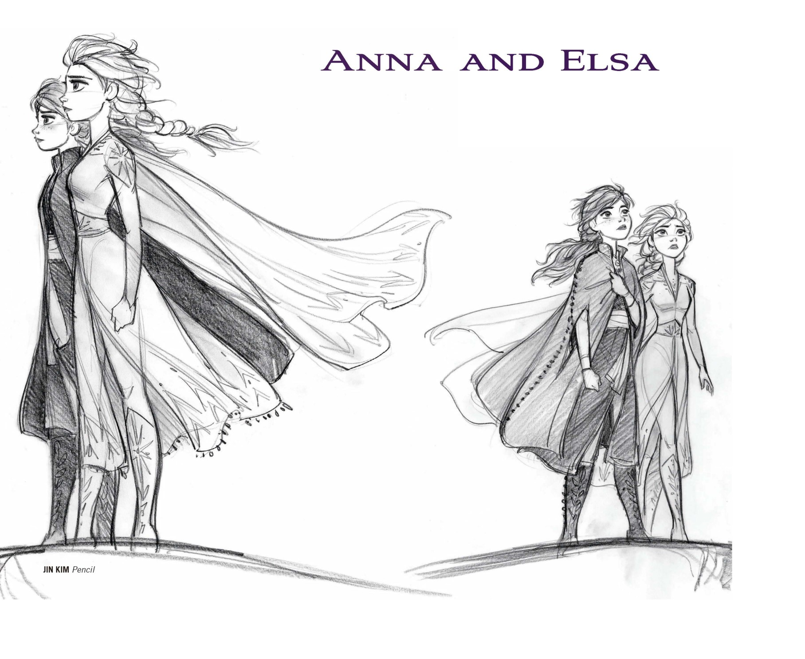
安娜与艾莎双人造型设计
Jin Kim 的铅笔定稿：安娜的花纹斗篷便装与艾莎的长袍披风并排而立——F2姐妹旅行装的标准参考图。
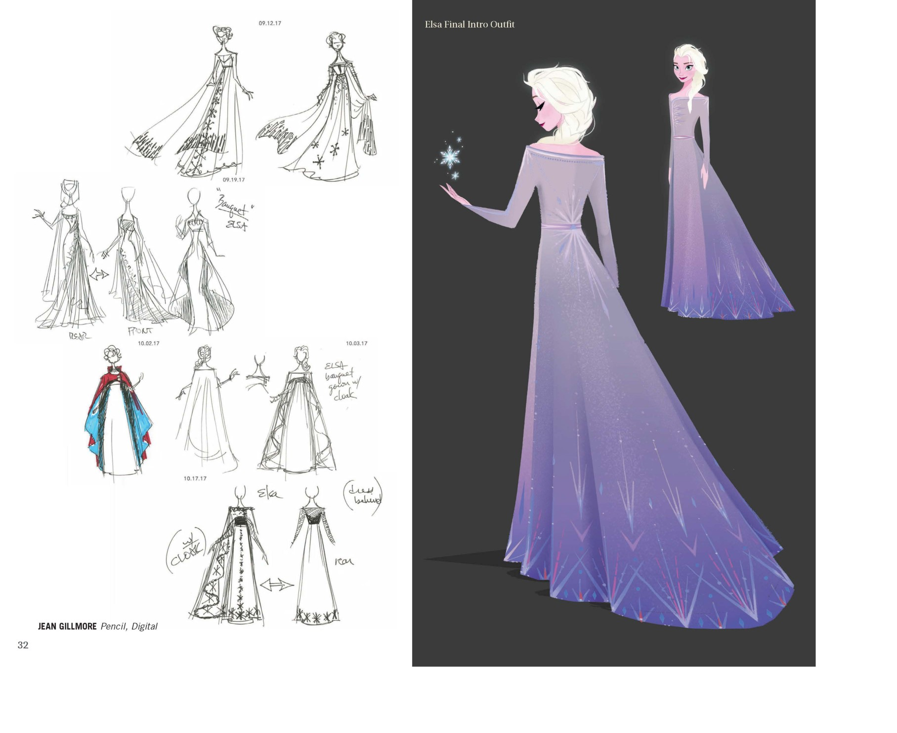
艾莎出场礼服设计
Jean Gillmore 的多版草图（含红蓝斗篷版本）与 Griselda Sastrawinata-Lemay 的定稿对照：最终定为淡紫渐变长裙，裙摆织入冰晶与叶/火纹样。
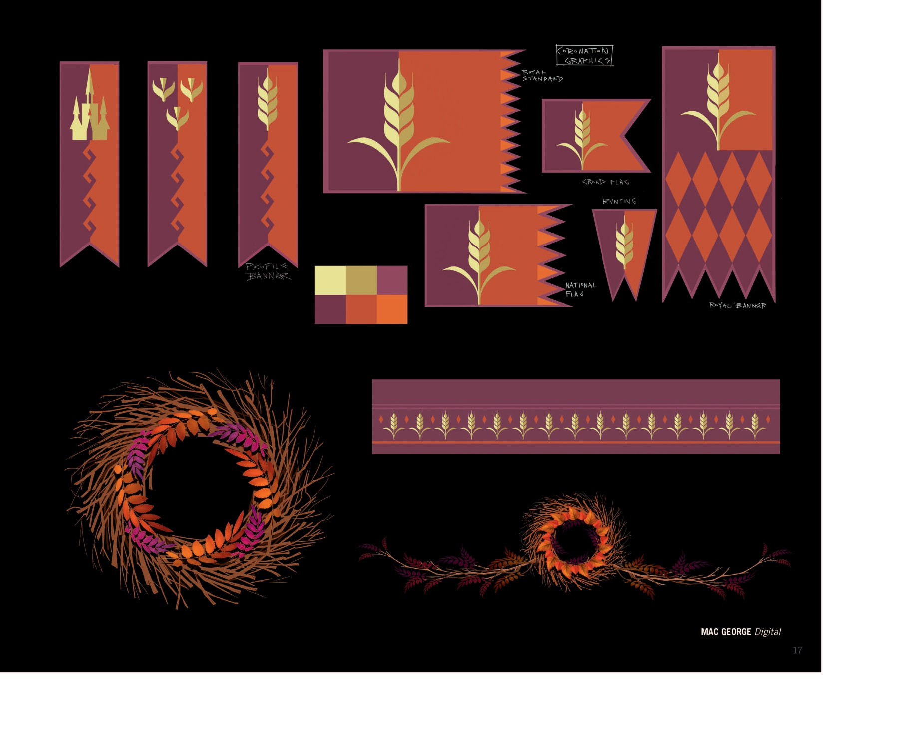
北地民族旗帜与纹章
Mac George 设计的 Northuldra 视觉识别系统：橙红+紫红+金色、小麦穗图腾，从国旗、军旗到花环花冠的完整纹章体系。
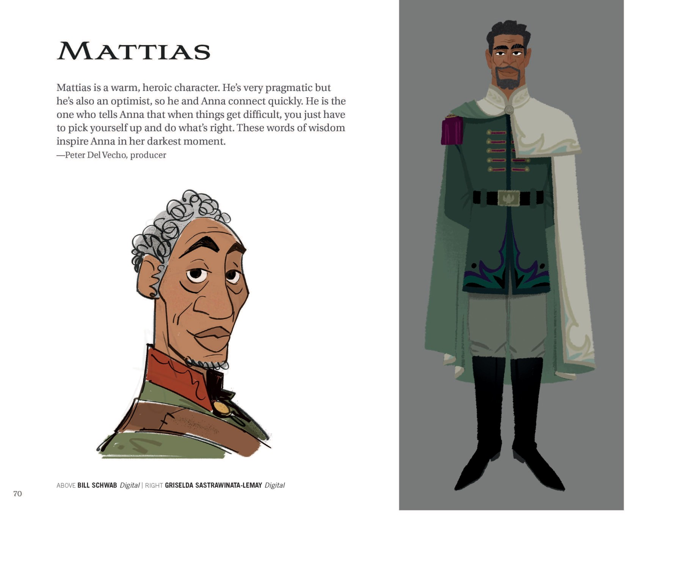
马蒂亚斯将军设定
「MATTIAS」角色页：Bill Schwab 的半身像与 Griselda 的全身立绘——被困魔法森林34年的忠诚将军，他「做对的事」的信念在最黑暗的时刻支撑了安娜。
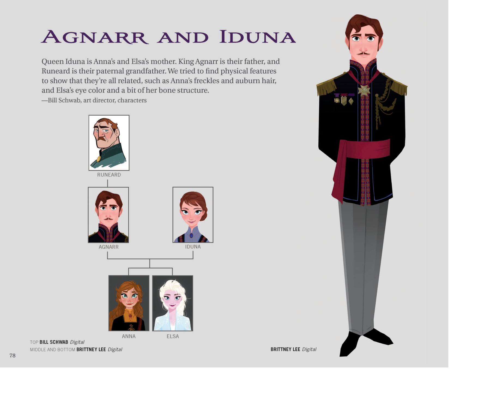
阿格纳与伊杜娜家族谱系
Brittney Lee 绘制的家族谱系图：鲁纳德→阿格纳+伊杜娜→安娜+艾莎。设计师在姐妹身上寻找遗传线索——安娜的雀斑与赤褐发、艾莎的眼色与骨骼结构。
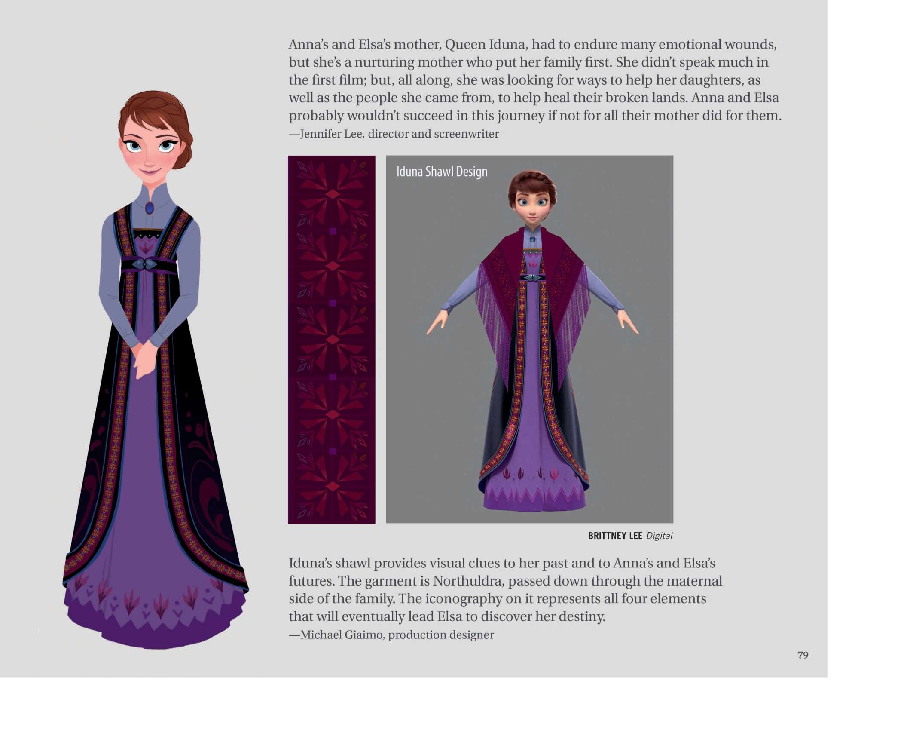
伊杜娜角色设定
伊杜娜的全身像与披肩纹样设计：栗色发髻、紫罗兰长裙与黑紫条纹披肩。Jennifer Lee 说她是一位把家庭放在首位的慈爱母亲，她的秘密是整段旅程的钥匙。
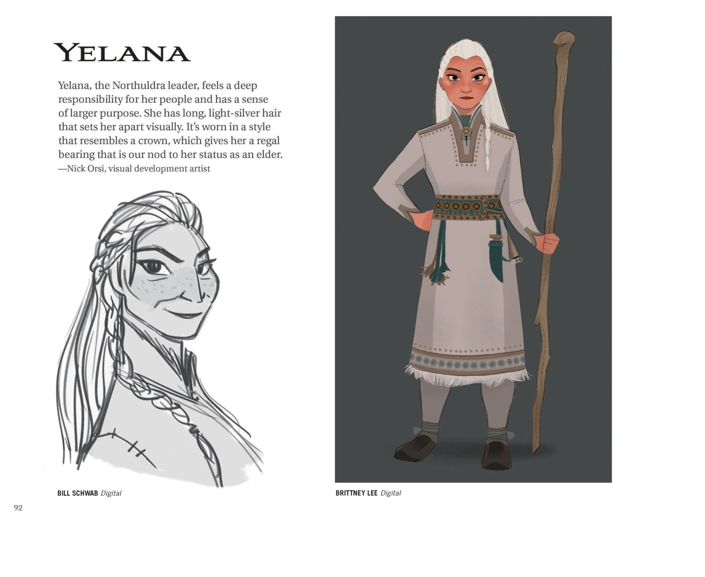
叶拉娜角色设定
「YELANA」角色页：银发编辫、面部雀斑的北地部族领袖——米白长袍镶绿松石纹样、手持木质长杖，Brittney Lee 的全身定稿与 Bill Schwab 的特写并置。
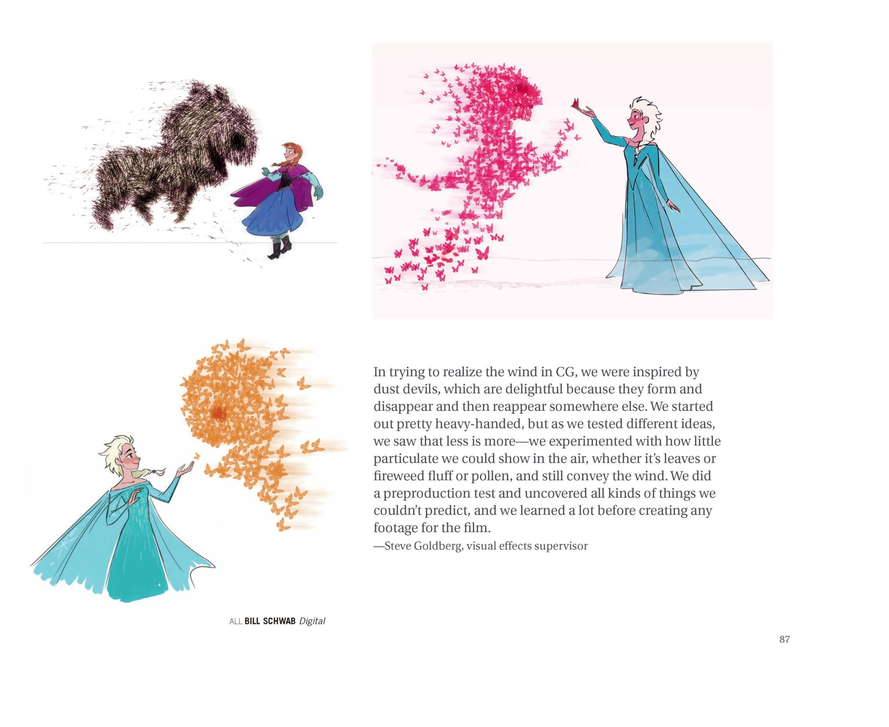
风之灵视觉测试
CGI 团队以尘卷风为灵感的风灵三联测试：安娜与「斯文形状」的风团互动、艾莎与粉色蝴蝶风团对视——「少即是多」，用最少的颗粒物传达风。

大地巨人章节扉页
「半角色半环境」的大地巨人：直接从崖面生长出来的岩石身躯，四肢故意做得长短不一，根系作为关节的连接组织。

布鲁尼三视图与火元素符号
火之灵布鲁尼的双色三视图与「火元素」菱形符号——蝾螈天生有皮肤花纹，于是火元素符号被设计成它背部的纹样，连它吐出的火苗里都能看到这个符号。

水灵诺克设定
「Water Spirit」小节：夜晚浅水中艾莎直面半透明的水马。制作设计师 Giaimo 称诺克是设计难度最高的角色——既要像马又要像水；既不祥神秘，又要如自然般时而仁慈时而毁灭。
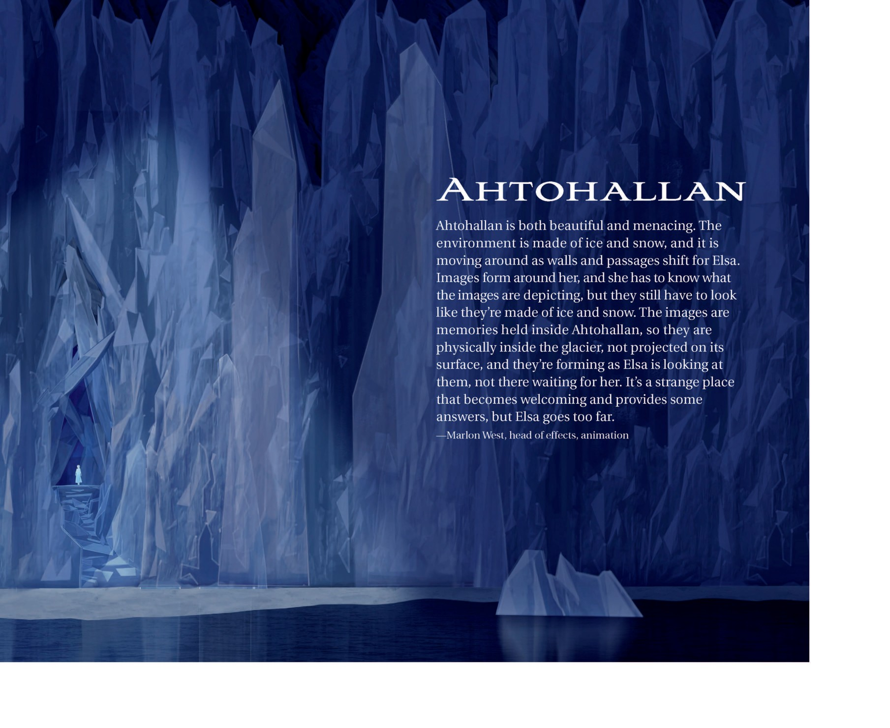
阿塔霍兰章节扉页
深蓝冰柱群立绘中，小小的艾莎立在冰下作比例参照。特效总监 Marlon West 阐释核心规则：记忆图像实体存在于冰内、随艾莎的凝视实时成形——「这是个会变得友善的奇怪之地，但她走得太远了。」
💡 这本书最值得读的地方
阿塔霍兰的记忆规则（见下方精选图版末张）：记忆不是投影在冰川表面，而是实体藏在冰里、随艾莎的凝视实时成形——特效总监 Marlon West 说「这是个会变得友善的奇怪之地，但她走得太远了」。一句「走得太远」，铺垫了全片最大的情感风险。
📌 本页要点
你正在阅读《设定集》卷的「The Art of Frozen II」。本页由电影正典、官方设定集与官方小说综合梳理，可作为该主题的速查入口；右侧目录可快速跳转到本页各小节。